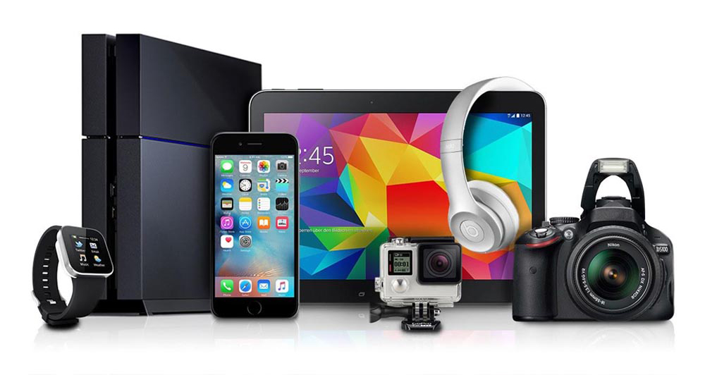
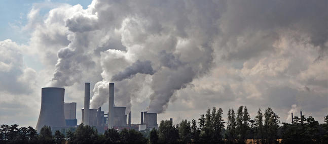

Notre consommation électrique et la pollution
qu'on crée augmente de plus en plus. Comment peut-on réduire tout ça ?

La pollution de notre planète augmente de manière exponentielle. Et ce depuis une centaine d'année. La course à l'Énergie mène peu à peu la planète à terme.
Sans s’en rendre compte nous nous sommes entourés de l'électronique.
Cela a commencé avec l’ordinateur, puis les téléphones. Aujourd’hui on ne compte plus le nombre d’appareils électroniques qu’on a. Malheureusement tout à un coût.
L’électrique
La tendance de nos jours c'est le connecté
Que ce soit les montres, les écouteurs ou encore simplement le smartphone.
Les batterie externes, ordinateurs portables ou encore les enceintes. Mais tout ça a une batterie.
On a nous aussi de plus en plus de gadget à notre ceinture de batman.

Mais nous ne consommons pas le plus. Il suffit de regarder le nombre de foyers et d'entreprises dans le monde. Plus l'entreprise est évoluée plus elle aura de machines.
Plus le foyer sera aisé plus celui ci aura d'appareils.
Que ce soit avec la domotique, le nombre d'ordinateur dans le foyer.. Plus il y a d'argent plus la consommation sera grande.
Les gazs
Tout le monde doit par moment se déplacer.
Que ce soit par besoin ou par plaisir. Mais les déplacements se font très nombreux et polluent beaucoup.
Encore une fois si une famille sera de classe moyenne elle ne sortira pas beaucoup.
Or si une famille sera plus aisée elle aura plus de chance de sortir manger, voyager etc..

Nous ne pouvons pas nous priver de tout déplacement. Mais on peut les optimiser pour moins rouler.
On peut encore prendre des transports en commun. On essaie déjà depuis un moment de réduire cela.
Bientôt certaines villes n'accepteront que les voitures les moins polluantes.
Mais il y a toujours des centaines de vols d'avions par jour qui polluent bien plus.
Seulement certains de ces trajets sont nécessaires. Pour l'économie de certains pays, ou certains commerces.
Par exemple la france aura maintenant des livraisons de viande rouge depuis les États Unis.
Cela fait partie de la course à l'argent pour la France. Mais il serait bien mieux pour l'écologie d'utiliser les ressources locales.
Conséquences
Comme dit précédemment, tout à un coût, tout ces voyages et appareils électriques. Ce ne sont pas eux même qui polluent d'eux même, mais l'énergie qui les alimente.
Celle ci vient de grandes centrales ou usines qui elles vont de plus en plus polluer la planète.

On ne sait pas exactement quand on pollue. Le plus souvent on ne le fait même pas exprès.
Par exemple le fait d’avoir lu cet article a déjà causé de la pollution sans qu’on le sache.
Il faut faire gaffe à notre consommation, celle d’électricité, de gazs et d’internet aussi. ( qui pollue extrêmement beaucoup étonnamment )
Notre Planète se meurt petit à petit.
On le remarque avec le dérèglement climatique mais ce n’est qu’une des premières conséquences.
Or surveiller sa consommation électrique est très compliqué de nos jours, mais d’autres alternatives existent…
Créer son énergie renouvelable ?


Réduire votre consommation est
trop compliqué ? Créez votre
propre énergie renouvelable ! C'est
de plus en plus simple...
Lire la suite !